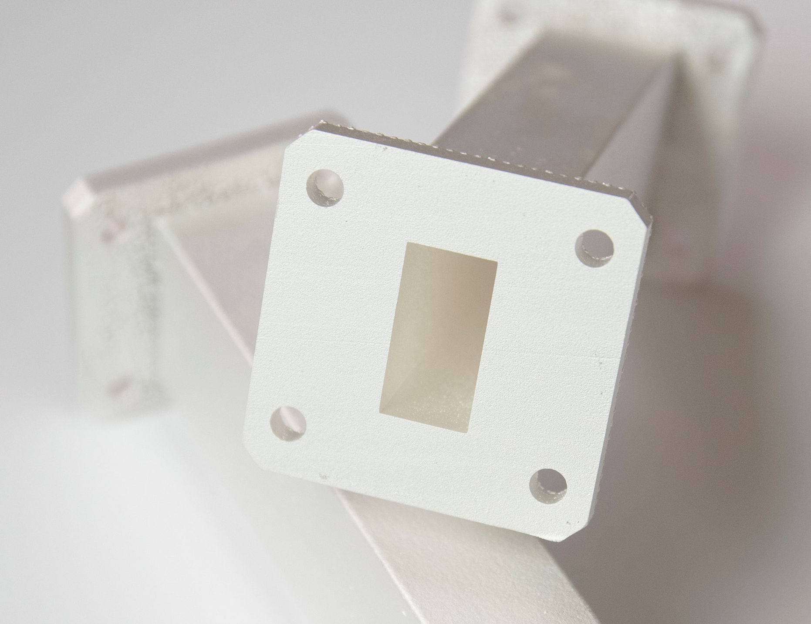
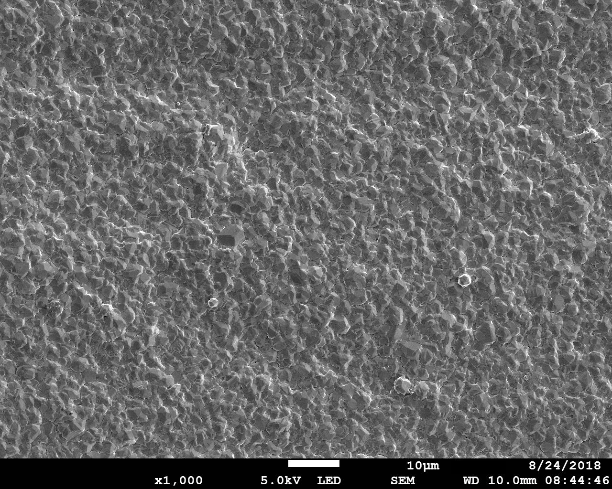

Welcome to,
Autocatsilver AB
State of the Art
Electroless and Autocatalytic Silver Processes
Space, Telecom and Electronics
Technology
Autocatalytic silver is an alternative to conventional
electroplating and immersion processes. The
technology enables silver plating on high complex
geometries with narrow tolerances, resulting in high
quality performance. Hence, autocatalytic silver has
the potential to both improve performance and reduce
plating costs.
The autocatalytic nature of the processes means that
plating is continued as long as the substrate is in the
plating bath, without applying a current. This differs
from immersion processes, that only plates to a few
tenths of a micron and from electroplating, that needs
electrodes and an applied current, for plating.
Application
There are many applications foreseen, within
space, telecom and electronics, for the autocatalytic silver technology. For example: Autocatalytic silver plating of 3D-printed
aluminum microwave components. Autocatalytic silver plating of microwave filters and antennas. Plating of ASIG, (Autocatalytic Silver Immersion Gold), as final finish for PCB's.
Space applications of ASIG for PCB's and autocatalytic silver on microwave components have been evaluated for ESA, (European Space Agency),
by the swedish research institute RISE IVF. ASIG finish provided good solderability even after having been exposed to two soldering processes
and autocatalytic silver-plated microwave components meet both RF- and space environment requirements.
 5 micron autocatalytic silver plated 3D-printed aluminium waveguide
 Autocatalytic silver microstructure: 1000 times magnification

5 micron autocatalytic silver-plated, dip brazed aluminium waveguide
Our processes
ESM 100: Autocatalytic silver for plating of ASIG, (Autocatalytic Silver Immersion Gold) as final finish
for PCB´s.
ESM 200: Autocatalytic silver for plating microwave components such as wave guides, filters and
antennas.
NIAG-Activator: Activator used onto electroless nickel plated surfaces followed by ESM 200.
AG-Barrier: Used as a first step on copper followed by ESM 200.
Our processes are easy to set-up and handle. All bath components, except for one key-additive for
each process, will be mixed by the customer from chemical commodities according to mixing
instructions. The key- additives, which are non-dangerous goods for transportation, will be supplied
by us. Click on the additive labels below and read about each process.
Business offer
We offer License Agreements for the processes: ESM 100 / ESM 200 / NIAG-Activator / Ag-Barrier.
We will make a quotation for supply of documentation and key-additives for initial trials.
This will enable for the customer, to set up the processes in house and perform evaluation.
After test completion and if contented, license agreement can be arranged.
Please contact us and describe your interest/application and we will send technical data sheets
regarding the processes mentioned above, by e-mail.
We are happy to collaborate with you!
contact
autocatsilver@gmail.com
LinkedIn Anders Remgård
Västra Eklanda Höjd 14
431 59 Mölndal
SWEDEN
About us
Our technology for autocatalytic silver has been developed by Anders Remgård, founder and CEO of
Autocatsilver AB. Anders has a MSc in Chemical Engineering and has been active as an
inovator and entrepreneur within the field of silver-plating since early 90s.
Emma and
Marcus are members of our Advisory Board and have both experience in process development, testing
and documentation of our processes.
Anders, CEO, MSc Chemical Enginnering
Emma, MSc Mechanical Engineering
Marcus, BSc Engineering Physics